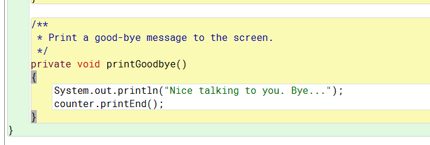
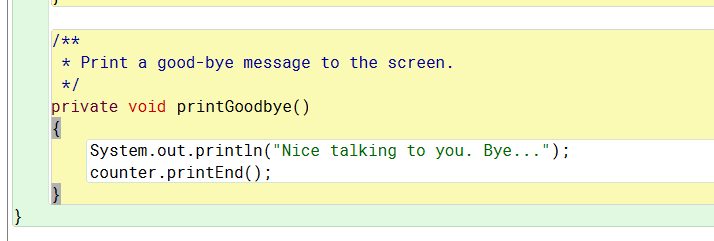

Exercise 6.1

Exercise 6.2
Constructors : Describes the different parameters Strings can be created with.
Method Summaries : The methods that can be used with the Class String by default.
Details : Details about the specific constructors and methods described above.
Exercise 6.3
startsWith(String prefix, int toffset): Does the same as the other but allows you to choose an int to start that many characters in.
Exercise 6.4
Exercise 6.5
Exercise 6.6
Pretty easy yeah.
Exercise 6.7
Exercise 6.8

Exercise 6.9

Exercise 6.10
Exercise 6.11

Exercise 6.12
An instance of this class is used to generate a stream of pseudorandom numbers.
public Random()
Random rnd = new Random();
rnd.setSeet(seed);
Exercise 6.13
import.util.Random
public Random(){
}
public Random randomGenerator(){
randomGenerator = new Random;
int rnd = randomGenerator.nextInt();
System.out.println(rnd);
}
Exercise 6.14


Exercise 6.15
Exercise 6.16

Exercise 6.17

Exercise 6.18

Exercise 6.19

Exercise 6.20

Exercise 6.21
All the random methods we have on computers were made by human and are therefore not actually random.
If someone got their finger on the pulse of a random generator they could exploit it.
Exercise 6.22
Exercise 6.23
Exercise 6.24
Exercise 6.25
boolean containsKey(Object key): Used to return True if for a specified key, mapping is present in the map.
boolean containsValue(Object value): Used to return true if one or more key is mapped to a specified value.
Object get(Object key): It is used to retrieve or fetch the value mapped by a particular key.
Object put(Object key, Object value): It is used to insert a particular mapping of key-value pair into a map.
Object remove(Object key): It is used to remove the values for any particular key in the Map.
Exercise 6.26
Exercise 6.27
Exercise 6.28
Exercise 6.29
Exercise 6.30
Exercise 6.31
Exercise 6.32
Exercise 6.33
Exercise 6.34
They differ because ArrayLists use index numbers to call list items where HashSets use "keys"
ArrayLists and HashLists seem to be a bit more forgiving and allow more flexibility.
Exercise 6.35
Then each item in the list could be run through a trim() process to remove the spaces
Maybe use some validation like when it finds a space it checks "if nextItem is " "" it trims the first space and checks again.
This would stop it from leaving empty Strings in your list from the ends of sentences or mistypes.
Exercise 6.36
Exercise 6.37
they'll have an actual order (index value) which can be manipulated. HashSets don't give a fuck and do whatever they want.
Exercise 6.38
Exercise 6.39
because gravity is always constant (in a certain context) there was no need to change that variable every time.
This allows only items of that class to access the variable without it becoming a Global variable which could cause lots of problems.
A real world example of this might be the license plate on your car. In America, every car has to have one (at least).
So as far as car dealers/manufacturers here are concerned there must be a constant spot in the car "class" for them.
But just because cars have them does not mean bicycles do, so you wouldn't want to carry that variable over to that class.
Exercise 6.40
Exercise 6.41
Exercise 6.42
Exercise 6.43
Exercise 6.44
Exercise 6.45
Exercise 6.46
Exercise 6.47
Exercise 6.48
If it doesn't, it will associate the item in that location on the HashMap.
Exercise 6.49
 
